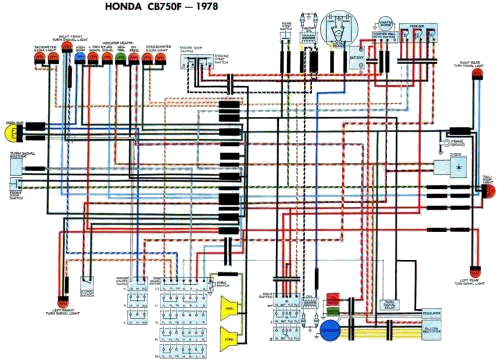
And God saw the light, that it was good:
and God divided the light from the darkness."
Genesis 1:3-4
¶ Every motorcycle has a Wiring System. Every one of them, bar none. Without a Wiring System there will be no light. No ignition either. No Charging System, no Turn Signals, no Brake Lights, no nuthin'.
The Simplest Wiring System has just four parts.
- A Power Source. Such as a Battery or power from Source Coils under a Flywheel.
- A Hot Wire to the Power Destination.
- A Power Destination or Load Device. Such a Device can be a Light Bulb, CDI box, Instrument Cluster, Switch, something like that.
- A Power Return. A Ground wire or Ground to a frame.
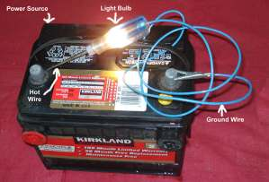
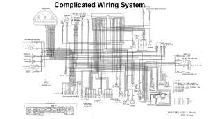
From here the skies the limit. The complication can be almost unbelievable. However, if we want all the fun stuff we put on our Motorcycles to work, we have to have what is essentially a combination of many different wiring systems. To fix a fault in this mess of wiring we need to remember each system is separate.While these Wiring Diagrams may seem confusing there is a method to their madness. In fact, there can be several methods to the madness, so to speak. Some have the wires drawn with the appropriate color. Some have each wire with a color ID Initial like G for green or Br for brown and the like. Others have..., well you get the idea. Fortunately, things have gotten better over the years. I remember way back in 1972 working on an Austin-Healey Sprite sports car, which they tell me is the same as an MG Midget sports car, while I was in the army. Seems to me it was a 1965 or 66 model. All the wires were one color, white. I found it hard to believe but it was true. I had to cut into the wiring bundle and separate each wire and test it till I finally found the fault. So today's wiring is pretty good. Here are some wiring diagrams so you can see what I mean.
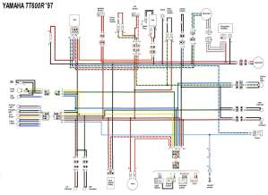 Colored and marked |
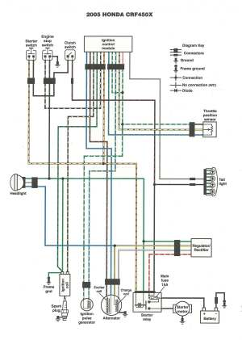 Colored and no marks |
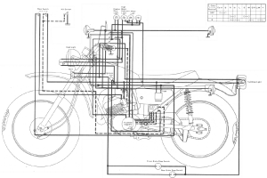 Color Codes Key ... sort of ??? |
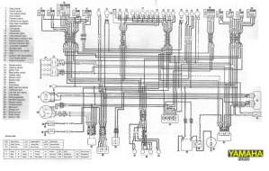 Color Code and Switch Identification |
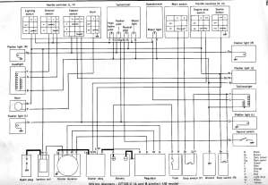 Wiring ID and Color Codes |
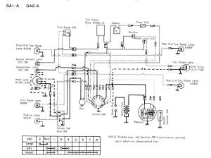 No Color Codes Key |
Sometimes, the Motorcycle Manufacturers help us in this by separating out the wiring for major systems making it easier to decipher them when a problem occurs. Below is the wiring for a Triumph Rocket III. The Auxiliary and Accessory Circuit Diagram, The Starting and Charging Circuit Diagram, The Lighting Circuit Diagram and The Complete System Circuit Diagram.
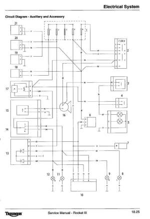 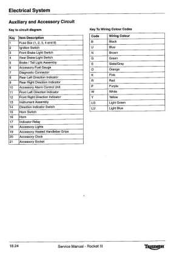 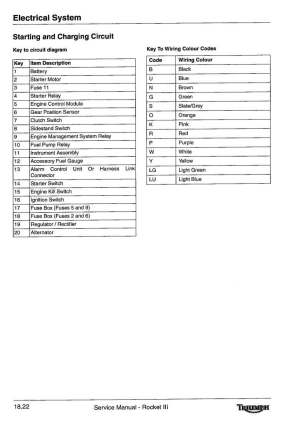 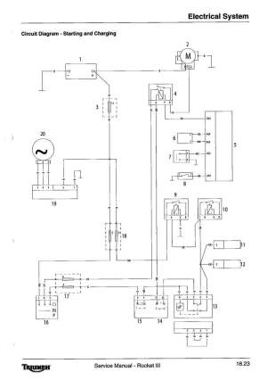 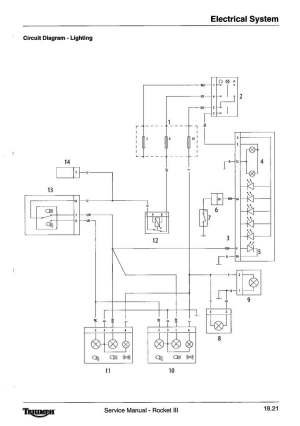 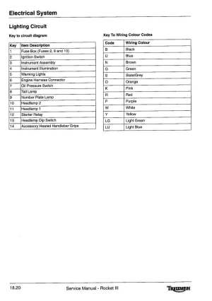 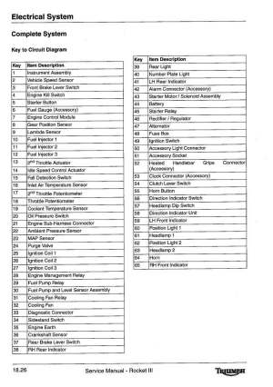 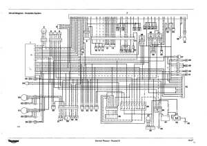
Auxiliary and Accessory Circuit Starting and Charging Circuit
Lighting Circuit Complete Circuit
So something is not working and we have a Wiring Diagram. Now what? First, give everything a visual inspection. If all looks OK, get out your wiring diagram and find out what color wires you need to test. If the turn signals don't work and the lights do, you do not need to test the lights. Start at the offending turn signals and find out what color wires go to them. Look for the hot wire going to the turn signals. Then follow that wire color back to the battery. Now we start testing.
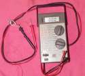
Usually, not always, just usually, the hot wire from the battery is a red one. This hot wire can run all over the motorcycle with other different colored wires going from the hot wire to the Power Destination/Device. This is why there are so many colors of wire. Each Power Destination (like a fuse block) or Device (like turn signals, lighting, voltage regulator, etc.) has its own combination of colored wires. Also, remember that the power goes through the end device and then on to ground. All this is really not that difficult with your Wiring Diagram leading the way.
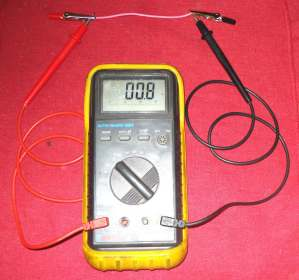 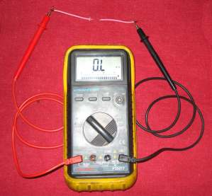
Also remember that while the source coils under the flywheel supply the power for the electrical system, they only work when the flywheel is turning. You may need to unplug them from the electrical system to test the rest of the wiring in the system. Check your shop manual. You do have one, right?
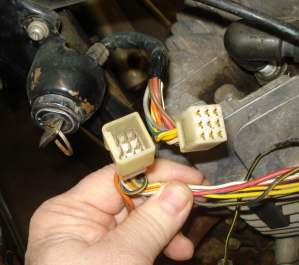
Here are some more things to consider as we play with the wiring on our motorcycles. The gauge (size) of our wires is important. Don't replace wires with a smaller gauge wire. It will tend to overheat and blow fuses. A bigger gauge wire is OK but never a smaller gauge wire. If a fuse keeps blowing, do not put a bigger fuse in then what is called for by your Shop Manual. The wires can get too hot before the fuse blows and start a fire on your beloved motorcycle. Find out why the stock fuse is blowing. Did you add too many extra lights or handgrip warmers? Did you weld something on your frame? Sometimes wiring is threaded inside frame tubes.
If you are doing custom work or replacing wires be careful over your wiring sizes and fuse sizes. For all the wire sizes to fuse sizes to amp loads to watt loads formulas it seems everyone has their own opinion on what is right. If I was wiring in a lot of extra stuff I would use nice big wires and I would use wires made up of lots of little wires as opposed to solid wires. The reason is that the electricity flows best on the outsides of a wire and less so on the inside. Lots of little wires have lots more surface area then a big solid wire. It would seem this is especially true of 12 volt power. That is why big, thick battery cables have lots of little, tiny wires woven together.
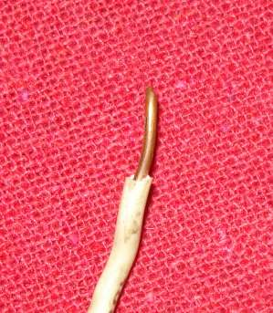 Solid Wire |
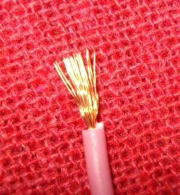 Multiple Wire |
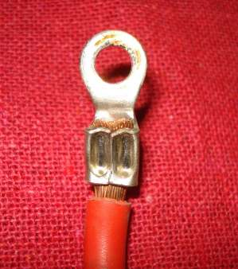 Battery Cable Wire |
Remember, DC and AC current are not the same. AC voltage current (Polarity) reverses itself 120 times a second in a 60 cycle circuit (60 Hertz), give or take a time or two. DC current does not. You may find both DC and AC current used on the same machine. AC current is used for the lights and then converted, by a rectifier, to DC current, to charge the Battery. Fun, Fun, Fun!
If you really want to sink your teeth into this, check out these links. Here Here and Here for formulas, wire gauge sizes, opinions, all sorts of interesting stuff about wires.
Lastly, just for your general information, here is a list of Honda wire colors and to what Device they go to for Honda Motorcycles. Do not trust this list too much. If you have an unknown wire and wonder where it might go this list might give you an idea as to where it could go... maybe... ???!
I have not found a similar list from any other Motorcycle Manufacturer.
| Color | Use | From | To |
| Black | a. Switched Hot b. Switched Hot c. Switched Hot d. Battery Voltage Sense Lead |
a. Ignition Switch b. Ignition Switch c. Ignition Switch d. Ignition Switch |
a. Fuse Box b. Handlebar Switch c. Starter Switch d. Voltage Regulator |
| Black/Brown | Fused Hot: Neutral Light Oil Light |
Fuse Box | Neutral Light Oil Light |
| Black/Red | Fused Hot: [Headlights] |
Fuse Box | Starter Switch |
| Black/White | Ignition System Hot | Ignition Handlebar Switch | Coils & T.P.I. Box |
| Blue/White | Switched Hot | Starter Switch | Dip/Dimmer Switch |
| Brown | Tail/Rear Lights | Brown/White Ignition Switch | Brown Lead |
| Brown/Black | Fused Hot: Running/Position Lights Instrument Lights |
Fuse Box | Brown/White Lead |
| Brown/White | Running/Position Lights Meter Lights Tail/Rear Lights |
Brown/White Brown/White Brown/White |
Turn Signal Switch Meters Ignition Switch |
| Green | Ground | Load | Ground |
| Green/Red | Starter Safety Circuit | Starter Relay Diode | Clutch Switch |
| Green/Yellow | Brake Light | Brake Switch | Brake Lamp |
| Grey | Hot: Indicator/Turn Signal |
Relay | Indicator/Turn Signal Switch |
| Light Green | Horn Circuit | Horn | Horn Switch |
| Light Green/Red | Neutral Light Circuit | Neutral Lamp | Neutral Switch |
| Orange/Light Blue | Switched Hot: Indicator/Turn Signal |
Indicator/Turn Signal Switch | Indicator/Turn Signal Bulbs |
| Orange/White Light Blue/White |
Front Running Lights | Indicator/Turn Signal Switch | Brown |
| Red | Hot | Battery | Ignition Switch |
| Red/White | Charging Lead | Rectifier | Battery |
| White | Switched Hot: Low/Dipped Beam |
Dip/Dimmer Switch | Headlight |
| Blue | Switched Hot: High/Main Beam |
Dip/Dimmer Switch | Headlight |
| White/Green | Fused Hot: Indicator/Turn Signal Horn Brake Light |
Fuse Box Fuse Box Fuse Box |
Indicator/Turn Signal Relay Horn Brake Light Switches |
| Yellow | Charging System | Stator | Regulator/Rectifier |
| Yellow/Blue | Ignition System | Coil | T.P.I. Box |
| Yellow | Starter Circuit | Starter Switch | Starter Relay |
God, as always, was right. Light is good.

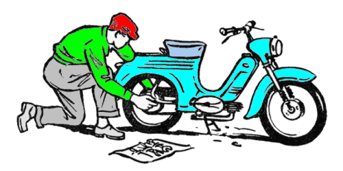 |
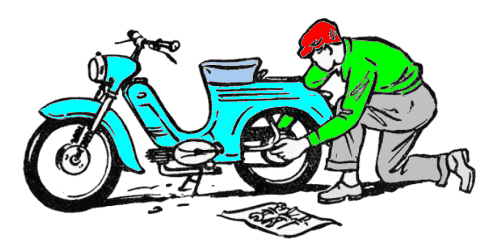 |
Copyright © 1999-2017 dansmc.com. All rights reserved.